Edexcel GCSE (9–1) History • Option 26/27
Conflict in the Middle East
1945–1995
Key Topic 1: The birth of the state of Israel, 1945–63
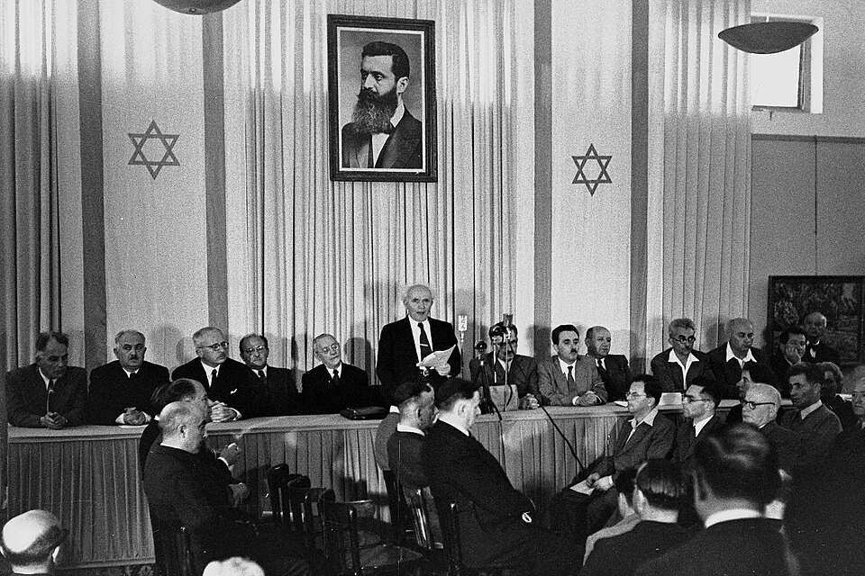
David Ben-Gurion reads the Declaration of Independence beneath the portrait of Theodor Herzl (Tel Aviv, 14 May 1948).
Official Course Textbook
Enquiry: “Why has peace proved so elusive in the Middle East?”
Contents
|
Lesson 1: KT 1.0: Broken Promises & Imperial Borders: Why Was Conflict in the Middle East Inevitable?
|
|
|
Lesson 2: KT 1.1: The End of the British Mandate and the Creation of Israel, 1945–1949
|
|
|
Lesson 3: KT 1.2: The Aftermath of the 1948–49 War & The Palestinian Refugee Crisis
|
|
|
Lesson 4: KT 1.3: Increased Tension, Nasser, and the Suez Crisis, 1955–1963
|
|
L1: KT 1.0: Broken Promises & Imperial Borders: Why Was Conflict in the Middle East Inevitable?[[SRC_MARKER:L0_Start]]
Learning Objectives
Analyse how the Sykes-Picot Agreement (1916) and League of Nations mandates drew artificial straight lines across former Ottoman territories.
Evaluate the contradictory British wartime pledges: the McMahon-Hussein Correspondence (1915) versus the Balfour Declaration (1917).
Identify the 4 strategic flashpoints of the Arab-Israeli conflict: Maritime Chokepoints, Elevated High Ground, Freshwater Basins, and Jerusalem.
The Middle East is the ultimate geopolitical crossroads of the earth—the physical land bridge connecting Europe, Asia, and Africa, the guardian of vital maritime chokepoints, and the birthplace of three world religions. To understand the bloody wars between Arabs and Israelis from 1945 to 1995, one must first understand its geography: how European diplomats drew straight ruler lines across deserts, why fresh water from the River Jordan is a matter of national survival, and why controlling the high ground of the Golan Heights or the narrow waters of the Straits of Tiran dictated the difference between victory and annihilation.
Source A: The Sykes-Picot Agreement Partition Map (8 May 1916)
Primary map of the secret Sykes-Picot Agreement signed on 8 May 1916 by Sir Mark Sykes and François Georges-Picot, dividing the Middle East into British and French spheres of influence.
Q1. Study Source A. Using the partition map, explain why the secret Anglo-French division of the Middle East in the Sykes-Picot Agreement laid the groundwork for decades of border conflicts and Arab betrayal.
Recall & Retrieval
1. Which vital maritime waterway, completed in 1869, connects the Mediterranean to the Red Sea?
2. Which narrow strait at the tip of the Sinai Peninsula controls access to the Gulf of Aqaba?
3. Which vast desert peninsula connecting Africa to Asia served as a buffer between Egypt and Palestine?
4. Which ancient city is holy to Judaism, Christianity, and Islam, and claimed by both peoples?
5. Which collapsing empire ruled the Middle East for over 400 years until its defeat in World War One?
6. What international organisation, established in 1919, granted Britain the Mandate for Palestine?
7. What political movement, founded by Theodor Herzl in 1897, campaigned for a Jewish national homeland?
8. What political ideology sought self-determination and political independence for Arab populations?
9. What secret 1916 agreement between Britain and France used straight lines to carve up the Middle East?
10. What 1939 British government policy paper severely restricted Jewish immigration into Palestine to 75,000 over five years?
Vocabulary Check
The Odd One Out: Circle ONE term that does not belong with the others. Explain your reasoning: What historical connection links the other terms, and why is your chosen term different?
Sykes-Picot Agreement | Mandate | Balfour Declaration | Zionism | Arab Nationalism | Chokepoint
Teacher Model / Pupil Reasoning:For over four centuries leading up to the First World War, the Middle East was ruled as part of the Turkish Ottoman Empire. When the Ottomans allied with Germany in 1914, Britain and France planned to dismember the empire and expand their imperial influence. In May 1916, British diplomat Sir Mark Sykes and French diplomat François Georges-Picot negotiated the secret Sykes-Picot Agreement, carving the region into spheres of influence: France claimed Syria and Lebanon, while Britain took Mesopotamia (Iraq) and Transjordan to secure Persian Gulf oil routes. Palestine was designated an international zone due to the religious sensitivities of Jerusalem. Following Allied victory in 1918, the League of Nations formalised this partition through the Mandates System. These arbitrary straight-line borders ignored historic ethnic, tribal, and religious communities, establishing chronic regional instability.
Imperial Partition (1916 vs 1920–21)
Before / After Geopolitical Analysis
Sykes-Picot Agreement (1916) vs. League of Nations Mandates (1920–21)
Slide the divider to compare the secret British-French wartime partition (Sykes-Picot 1916) with the formal post-war League of Nations Mandates established at the San Remo Conference (1920–21). Note how the international brown zone in Palestine was converted into a direct British Mandate, and how straight-line imperial boundaries carved up the former Ottoman provinces.
1916 Sykes-Picot Partition
1920–21 Post-San Remo Mandates
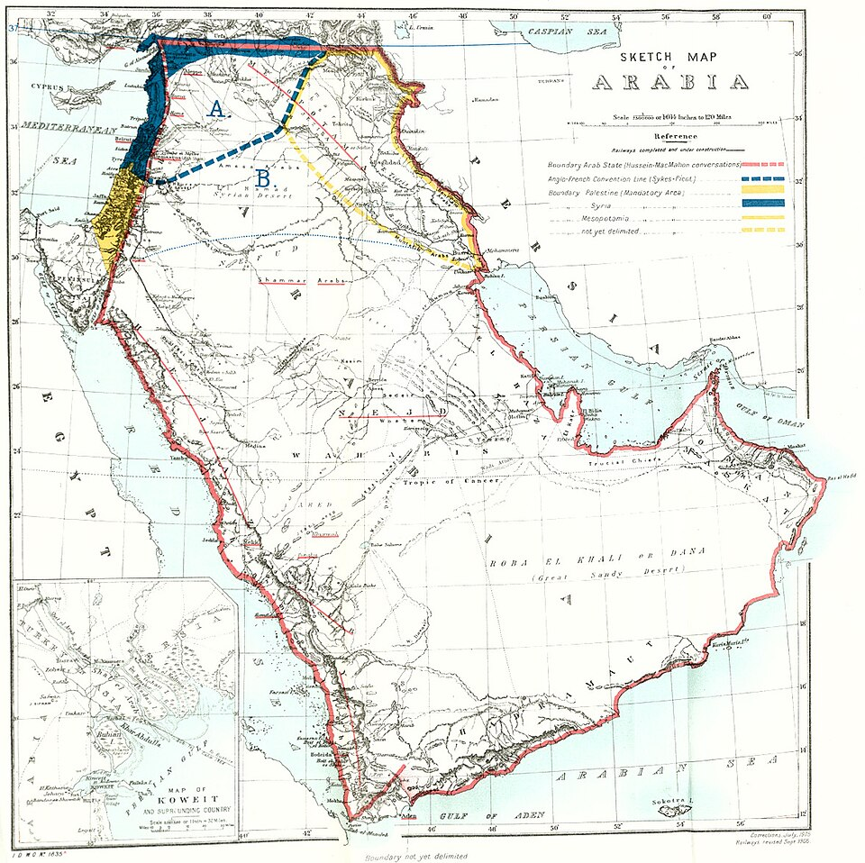
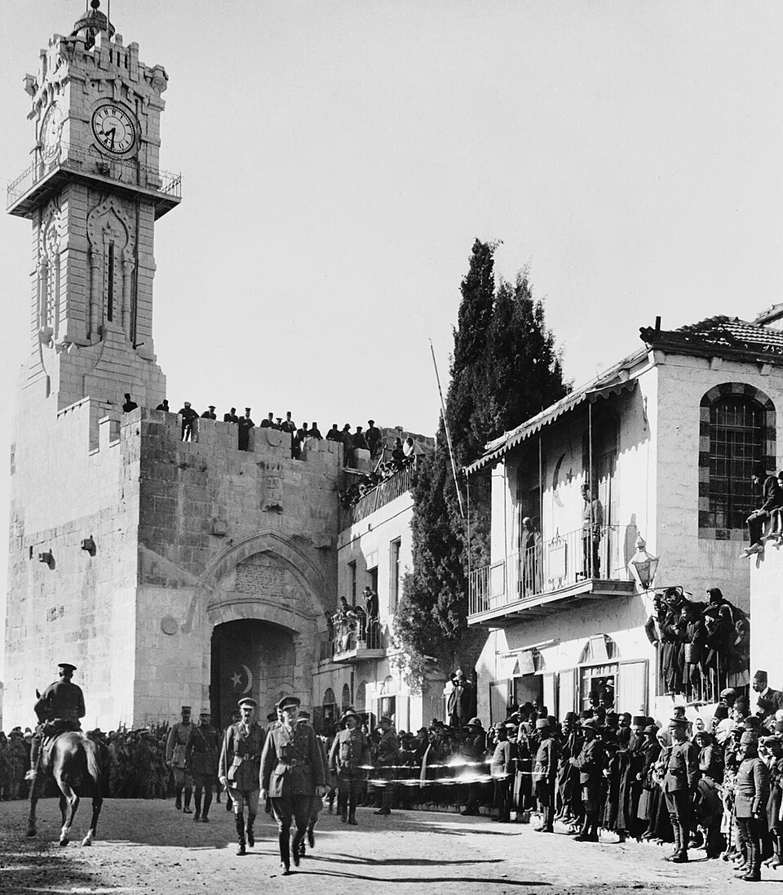
Source B: The Original Balfour Declaration Letter (2 November 1917)
Archival Evidence • Expand ▼
[[SRC_MARKER:L0_Source_4]]
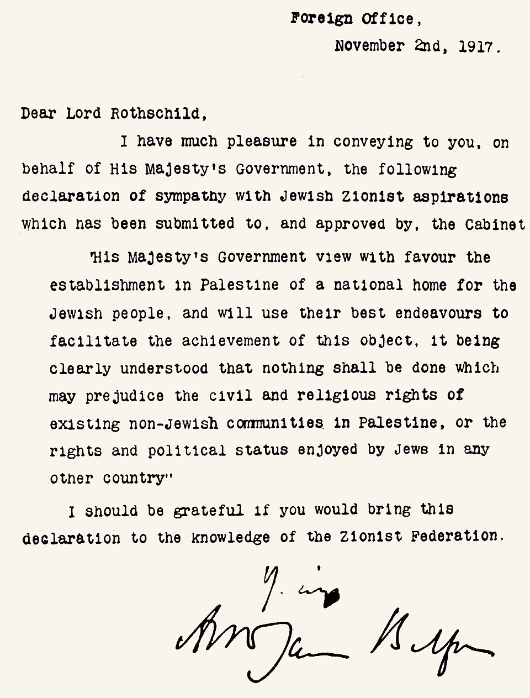
The original letter from Foreign Secretary Arthur Balfour to Lord Rothschild expressing British support for a national home for the Jewish people in Palestine.
During the First World War, the British government made contradictory promises to Arab and Jewish leaders to secure wartime support, creating a legacy of mutual betrayal.
1. The McMahon-Hussein Correspondence (1915–16): British High Commissioner Sir Henry McMahon promised Sharif Hussein of Mecca that Britain would recognise an independent Arab state in exchange for an armed Arab revolt against Ottoman forces. Arab leaders understood this pledge to include Palestine.
2. The Balfour Declaration (2 November 1917): Foreign Secretary Arthur Balfour officially wrote to Lord Walter Rothschild pledging British support for the establishment of a "national home for the Jewish people" in Palestine. Crucially, the letter stated that nothing should prejudice the civil and religious rights of existing non-Jewish communities, conspicuously ignoring political or national rights for the 90% Arab majority.
The Interwar Mandate & The 1939 White Paper: Rising Jewish immigration during the 1930s—fuelled by Nazi persecution in Europe—sparked intense Palestinian Arab alarm, culminating in the 1936–39 Arab Revolt. Faced with imminent war against Germany and desperate to secure Middle Eastern oil and Arab loyalty, Britain issued the 1939 MacDonald White Paper. This strictly capped Jewish immigration to 75,000 over five years and required Arab consent thereafter. The White Paper outraged Zionists as a betrayal during the Holocaust, while leaving Arabs unsatisfied, locking both sides in bitter conflict by 1945.
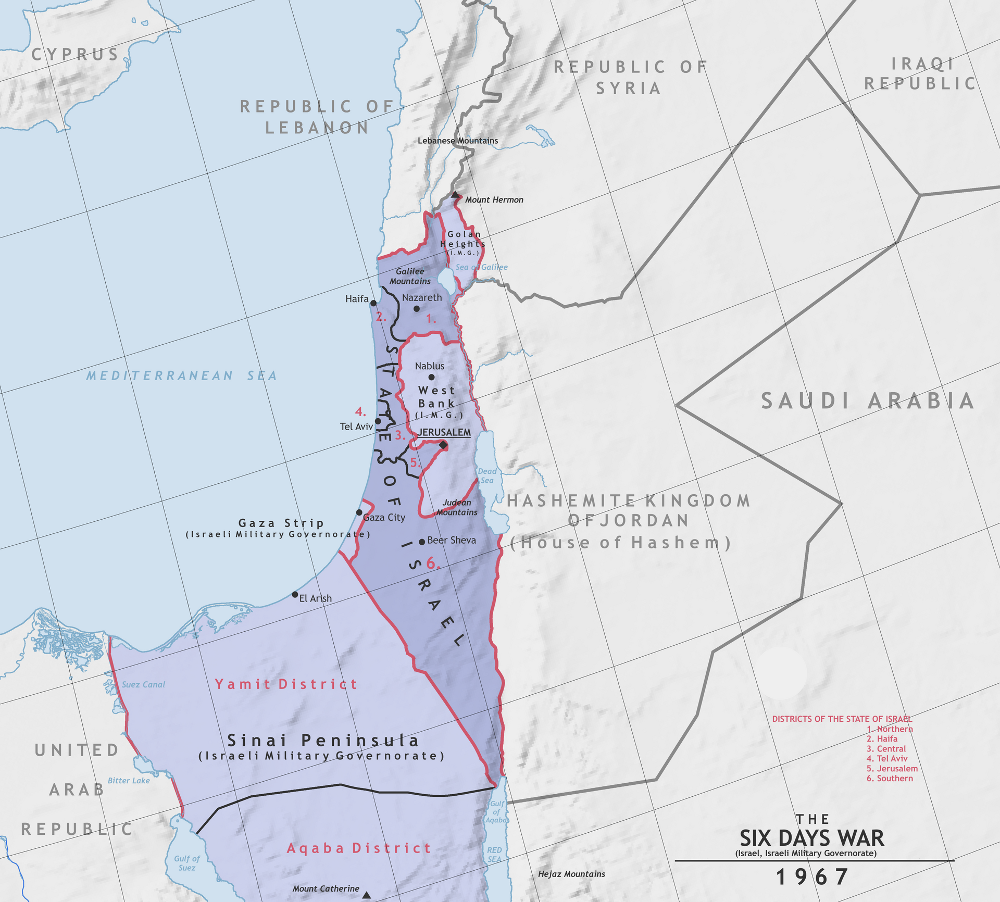
The physical geography of the Middle East created four critical flashpoints that dictated military operations and causes of war between 1948 and 1973:
- The Maritime Chokepoints (Suez Canal & Straits of Tiran): The Suez Canal linked Europe to Asian oil, while the narrow Straits of Tiran at the mouth of the Gulf of Aqaba controlled Israel’s southern sea route from Eilat. Whenever Egypt blockaded the Straits (in 1956 and 1967), it severed Israel's oil supplies, acting as an immediate trigger for war.
- The Elevated High Ground (The Golan Heights): A volcanic plateau in south-western Syria rising 3,000 feet above Galilee. Prior to 1967, Syrian artillery used this vantage point to shell Israeli border settlements below.
- Freshwater Basins & Territorial Depth (West Bank & River Jordan): The River Jordan and the Sea of Galilee supply vital fresh water. Before 1967, Israel’s narrow central waist was only 9 miles wide, making the West Bank hill ridge a critical natural frontier.
- The Sacred Core (Jerusalem & The Old City): One square kilometre of ancient holy sites claimed by Jews, Muslims, and Christians, divided between Israel and Jordan along the 1949 Green Line.
✍️ Consolidation & Discussion
Recall & AnalysisQ2. By 1945, why did Britain face impossible, conflicting pressures in governing Palestine?
Guidance: Consider the dilemma facing the British government at the end of the Second World War:
1. Palestinian Arabs (two-thirds of the population) demanded immediate independence and an end to Jewish immigration, citing Britain’s promises in the 1939 MacDonald White Paper.
2. Jewish leaders and survivors demanded that Britain tear up immigration quotas and create an independent Jewish homeland to rescue 250,000 Holocaust survivors stranded in European displaced persons camps.
3. Britain was economically exhausted from the war and caught in the crossfire of escalating communal violence.
Map Task 1: The Geopolitical Landscape of the Middle East — Reference Guide
Teacher & Pupil Reference Key
Geopolitical Overview: Use this authoritative reference map to verify all 9 sovereign nation-states, 8 regional capitals, and 8 critical maritime waterways/chokepoints. Note how British and French imperial partitions created artificial straight-line borders across historic populations, and how strategic waterways like the Suez Canal and Straits of Tiran repeatedly triggered regional wars.
Figure 1.0: Authoritative Geopolitical Reference Map of the Middle East (CIA World Factbook / Official Public Domain Cartography).
Geopolitical Reference Key:
| Sovereign State & Capital |
Key Maritime Waterways |
Strategic GCSE Significance |
Egypt — Cairo ★
Israel — Jerusalem ★ / Tel Aviv |
Suez Canal
Straits of Tiran |
Nationalised in 1956; Egyptian blockade of Tiran in 1967 triggered the Six Day War. |
Jordan — Amman ★
Syria — Damascus ★ |
River Jordan
Sea of Galilee |
Disputes over River Jordan headwaters fueled border clashes; West Bank and Golan Heights captured in 1967. |
Lebanon — Beirut ★
Iraq — Baghdad ★
Saudi Arabia — Riyadh ★ |
Persian Gulf
Gulf of Aqaba & Suez
Red Sea |
Southern Lebanon was base for PLO operations leading to 1982 invasion; Gulf oil routes triggered 1973 OPEC embargo. |
Map Task 2: Israel & The Contested Territories (Post-1967) — Reference Key
Territorial Outcomes Post-1967
Historical Context: During the Six-Day War (5–10 June 1967), Israel pre-emptively attacked Egyptian, Syrian, and Jordanian air and ground forces, capturing the Sinai Peninsula, the Gaza Strip, the West Bank, East Jerusalem, and the Golan Heights. This quadrupled the territory under Israeli military control and brought over one million Palestinian Arabs under military occupation.
Israel & Occupied Territories (Reference Shading)

Regional reference map showing 1949 Green Line, West Bank (Jordan), Gaza Strip & Sinai (Egypt), and Golan Heights (Syria).
1967 Six-Day War Macro Territorial Shift

Authentic historical map showing pre-1967 Israel (blue) and newly occupied Egyptian, Syrian, and Jordanian lands (orange).
Pedagogical Check: Pupils should use these two reference maps to ensure their workbook maps correctly differentiate pre-1967 sovereign Israeli territory from the four newly occupied territories. Highlight that East Jerusalem and the Golan Heights were later unilaterally annexed, while Sinai was returned to Egypt under the 1979 Camp David Accords.
🚪 Exit Ticket: The Geopolitical Priority Verdict
Exit Ticket · Evaluative Ranking Ladder
Which foundational factor studied today created the greatest long-term obstacle to peace in the Middle East? Rank them from 1 (Most Destabilising) to 3 (Least Destabilising) and justify your #1 rank:
• Factor A: Contradictory Imperial Pledges (McMahon-Hussein Correspondence vs Balfour Declaration vs Sykes-Picot).
• Factor B: Artificial Borders & Mandates (European straight-line borders dividing historic ethnic and religious communities).
• Factor C: Strategic Chokepoints & Topography (vulnerability around the Straits of Tiran, Golan Heights, and Suez Canal).
Teacher Guidance: State your #1 factor and write 2-3 structured sentences using precise historical vocabulary (e.g., mandate, sovereignty, buffer zone, casus belli) to justify your choice.
L2: KT 1.1: The End of the British Mandate and the Creation of Israel, 1945–1949[[SRC_MARKER:L1_Start]]
Learning Objectives
Understand the conflicting interests and demands of Jews and Arabs within the British Mandate.
Analyze the key events leading to the end of the British Mandate, partition and the creation of Israel, including the significance of the bombing of the King David Hotel and UN Resolution 181.
Describe the key events of the Arab-Israeli war (1948–49).
In 1945, the world was reeling from the horrors of the Holocaust, creating immense international pressure for a Jewish homeland. Yet, for the Arab population of Palestine, this meant the terrifying prospect of losing their ancestral land. The British, exhausted and bankrupt from World War Two, were caught in the middle of an impossible situation.
Did you know?
- 1917: The Balfour Declaration originally promised British support for a national home for the Jewish people.
- 100,000: The number of Jewish Holocaust survivors US President Truman demanded Britain immediately allow into Palestine.
- 1947: The year Britain gave up and handed the Palestine problem to the newly created United Nations.
Recall & Retrieval
1. What 1915–16 correspondence between the British High Commissioner in Cairo and the Sharif of Mecca promised British support for Arab independence?
2. What secret 1916 Anglo-French agreement partitioned the Ottoman Arab provinces into British and French spheres of influence?
3. What 1917 British policy document declared support for the establishment of a 'national home for the Jewish people' in Palestine?
4. Which international body granted Britain the Mandate to administer Palestine in 1922?
5. What major three-year rebellion by Palestinian Arabs erupted in 1936 demanding independence and an end to Jewish immigration?
6. What 1937 British royal commission first proposed partitioning Palestine into separate Arab and Jewish states?
7. What 1939 British government policy statement severely restricted Jewish immigration to 75,000 over five years?
8. Which vital canal, opened in 1869, made the Middle East of supreme strategic importance to the British Empire?
9. What was the main Jewish self-defence militia founded in 1920 to protect Jewish settlements in Mandatory Palestine?
10. Which catastrophic genocide during World War Two saw 6 million European Jews murdered by Nazi Germany?
Vocabulary Check
The Golden Sentence: Choose TWO terms from the word bank. Write ONE grammatically sophisticated, historically accurate sentence connecting them using a causal conjunction (because, although, or consequently):
Mandate | Zionism | Irgun | Nakba | Dual Obligation | UN Resolution 181
Teacher Model / Pupil Sentence:Following World War Two in 1945, Great Britain found itself trapped in an untenable position in its Palestine Mandate. Over 250,000 Jewish Holocaust survivors languished in European Displaced Persons (DP) camps, prompting Zionist demands for 100,000 immediate immigration certificates. However, Foreign Secretary Ernest Bevin strictly enforced the 1939 White Paper quota of 1,500 monthly permits to protect British oil interests with Arab states, provoking fierce condemnation from US President Harry S. Truman.
Palestinian Arabs—who formed a two-thirds majority of Palestine—firmly rejected partition and mass Jewish immigration. Weakened by the suppression of the 1936–39 Revolt, Palestinian leaders argued European antisemitism should not be resolved at their expense. The newly formed Arab League warned that imposing a Jewish state on Arab land would trigger armed conflict across the entire Middle East.
Outraged by Bevin’s immigration restrictions, Jewish militias ended their wartime cooperation with Britain and launched the armed Jewish Insurgency. The moderate Haganah allied with militant paramilitary splinter groups, the Irgun (led by Menachem Begin) and Lehi. Together, they executed coordinated sabotage operations, blowing up bridges and severing railway networks to paralyse British military communications.
Between 1945 and 1947, Zionist paramilitary groups escalated attacks against British military infrastructure, raiding airfields, sabotaging oil pipelines, and ambushing colonial patrols. In response to British curfews and martial law, the Irgun waged aggressive psychological warfare, demonstrating that 100,000 British soldiers could not maintain security or governance in Palestine.
Source A: The Ruins of the King David Hotel, Jerusalem (July 1946)
Archival Evidence • Expand ▼
[[SRC_MARKER:L1_Source_8]]
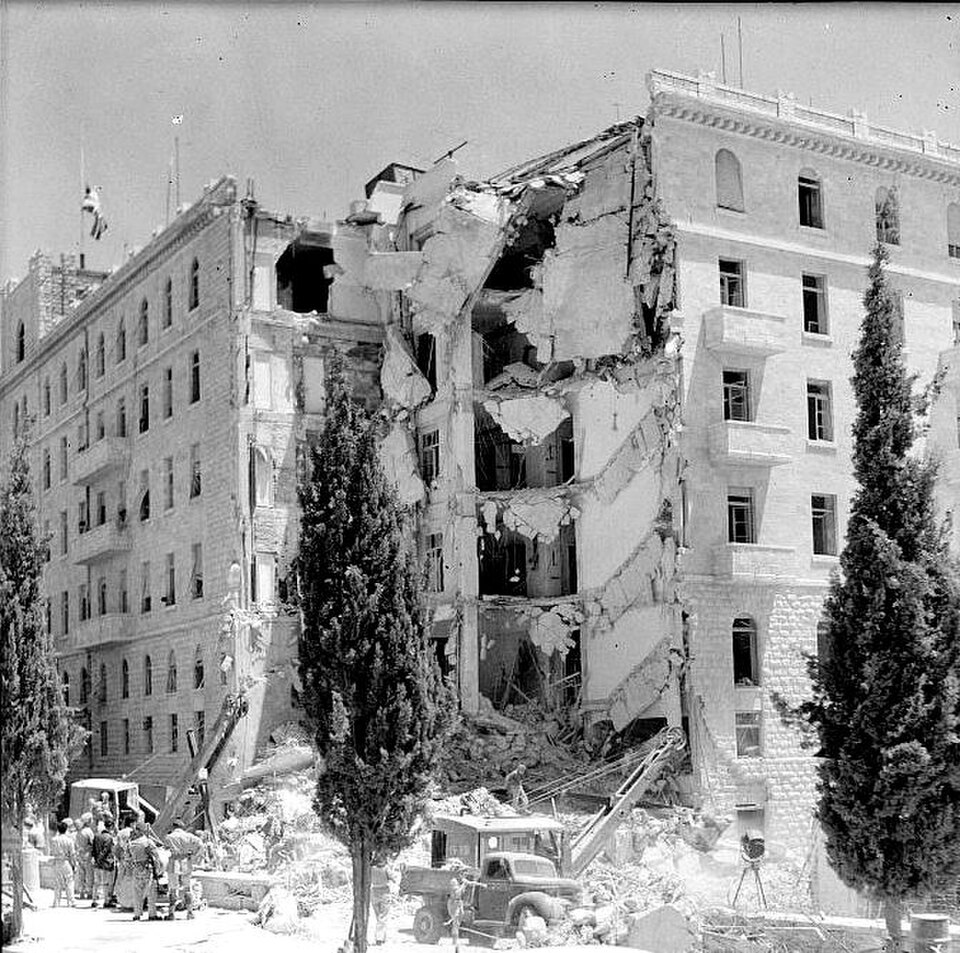
Primary Photograph: The south-west wing of the King David Hotel collapsed after the Irgun bomb detonation on 22 July 1946, killing 91 British, Arab, and Jewish staff.
On 22 July 1946, the Irgun bombed the King David Hotel in Jerusalem, the central headquarters of British civil administration and military command. Smuggling explosives into the basement in milk cans, the blast collapsed the entire south-western wing, killing 91 British, Arab, and Jewish staff. The attack shocked British domestic opinion and proved the Mandate was becoming financially and militarily unsustainable.
Source B: The Sergeants Affair (July 1947)
Archival Evidence • Expand ▼
[[SRC_MARKER:L1_Source_9]]
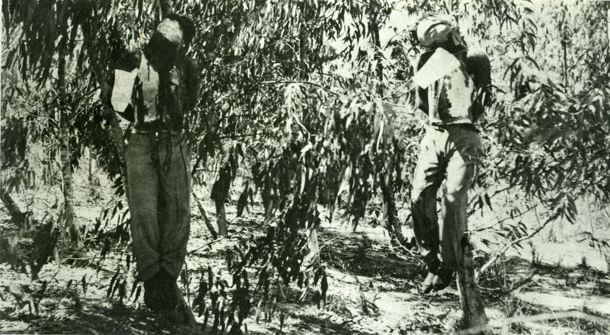
Primary Photograph: British Army Intelligence Corps sergeants Clifford Martin and Mervyn Paice, hanged by the Irgun in a eucalyptus grove near Netanya on 31 July 1947. The bodies were booby-trapped with a mine in retaliation for British executions of Irgun militants.
In July 1947, the insurgency reached a climax in the Sergeants Affair: the Irgun abducted and hanged two 20-year-old British Army intelligence sergeants (Clifford Martin and Mervyn Paice) in retaliation for British executions of Irgun militants, booby-trapping their bodies. The incident ignited anti-Jewish riots across British cities and triggered furious public demands to "bring our boys home", destroying any remaining British political resolve.
Source C: The SS Exodus Arriving in Haifa (July 1947)
Archival Evidence • Expand ▼
[[SRC_MARKER:L1_Source_10]]
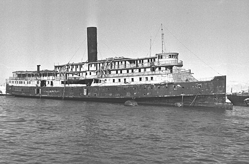
The President Warfield (renamed SS Exodus 1947) carrying 4,500 Holocaust survivors intercepted by the Royal Navy.
In July 1947, the Royal Navy intercepted the SS Exodus carrying 4,500 Holocaust survivors and forcibly deported them back to detention camps in Germany. Photographs of British troops turning away destitute refugees provoked global moral outrage and alienated US financial support. Facing economic exhaustion and military quagmire, Britain announced in September 1947 that it would terminate the Mandate and withdraw all forces by 15 May 1948, referring Palestine to the United Nations.
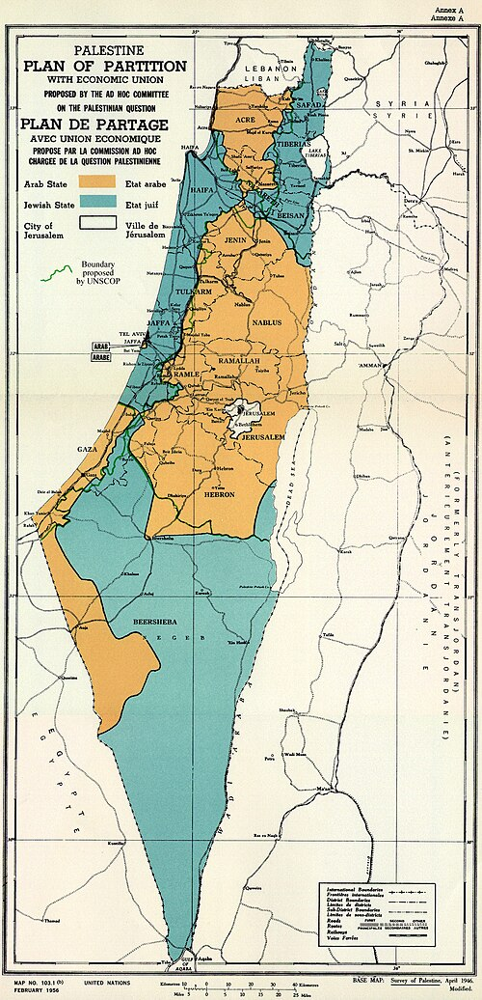
On 29 November 1947, the UN General Assembly approved Resolution 181 to partition Palestine: 55% was allocated to a Jewish state, 45% to an Arab state, with Jerusalem designated an international zone (corpus separatum) under UN control. Zionist leaders accepted partition to gain sovereign legitimacy, but Palestinian Arabs and the Arab League rejected it as an unjust imperial partition of their homeland, triggering immediate civil war.
Partition vs Armistice (1947–1949)
Before / After Geopolitical Analysis
UN Partition Plan (Resolution 181, 1947) vs. 1949 Armistice Green Line
Slide the divider to compare the territorial division proposed by the United Nations in November 1947 with the reality established by the 1949 Armistice Agreements. Under the UN Plan, the Jewish state was allocated 55% of Palestine. Following the 1948–49 War, Israeli territory expanded to 79%, while Transjordan annexed the West Bank and East Jerusalem, and Egypt took control of the Gaza Strip.
1947 UN Partition Plan (55% Jewish State)
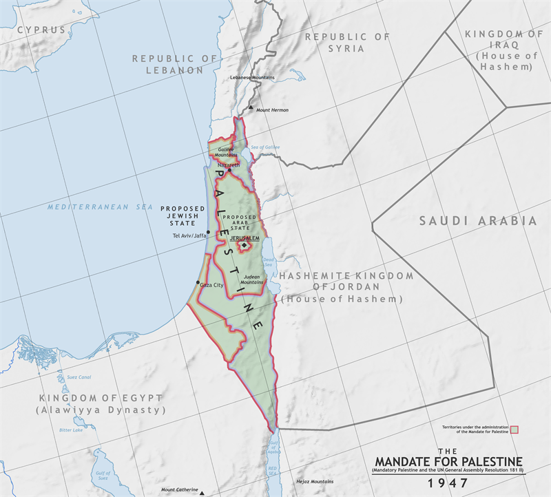
1949 Armistice Green Line (79% Israel)

From December 1947, violent civil conflict erupted as British forces disengaged. In March 1948, the Haganah enacted Plan Dalet (Plan D) to secure strategic roads and Jewish settlements between Tel Aviv and Jerusalem. Intense fighting and the Irgun-Lehi massacre of over 100 villagers at Deir Yassin (9 April 1948) ignited widespread panic, prompting over 250,000 Palestinian Arabs to abandon their homes and flee.
Source D: David Ben-Gurion Declaring the State of Israel (14 May 1948)
Archival Evidence • Expand ▼
[[SRC_MARKER:L1_Source_15]]

David Ben-Gurion reads the Declaration of Independence at the Tel Aviv Museum beneath Theodor Herzl’s portrait.
On 14 May 1948, as the British Mandate officially expired and the last British troops departed, David Ben-Gurion declared the birth of the sovereign State of Israel beneath a portrait of Theodor Herzl in Tel Aviv. The United States and Soviet Union immediately extended diplomatic recognition, while neighboring Arab states mobilised for an all-out military assault.
On 15 May 1948, five Arab League armies (Egypt, Transjordan, Syria, Iraq, and Lebanon) invaded Israel. Although initially pushed to the brink, Israel used the four-week First UN Truce (June 1948) with decisive effect: secretly importing modern weapons and fighter aircraft from Czechoslovakia, and integrating forces into the unified Israeli Defence Forces (IDF). Resuming combat in July 1948 in the "Ten Days Offensive", the IDF reopened the besieged corridor to Jerusalem and drove Egyptian forces from the Negev. Subsequent autumn campaigns secured the entire Galilee, compelling Arab commanders to negotiate separate armistices.
Between February and July 1949, UN armistice agreements established the Green Line. Israel expanded its territory to 79% of mandatory Palestine—far exceeding the UN Partition allocation. Transjordan occupied and annexed the West Bank and East Jerusalem, while Egypt controlled the Gaza Strip. Over 700,000 Palestinian Arabs were permanently displaced from their homes, an enduring catastrophe Palestinians mourn as the Nakba.
✍️ Consolidation & Discussion
Recall & AnalysisQ1. By 1947, why did the British government conclude that the Palestine Mandate was completely ungovernable?
Guidance: Consider the triangle of pressure: armed Jewish insurgency, international condemnation (Exodus 1947), and severe domestic post-war bankruptcy in Britain.
Map Task: 1947 UN Partition Plan vs. 1949 Armistice Green Line — Reference Key
Territorial Outcomes Post-1967
Historical Context:
Israel & Occupied Territories (Reference Shading)
Regional reference map showing 1949 Green Line, West Bank (Jordan), Gaza Strip & Sinai (Egypt), and Golan Heights (Syria).
1967 Six-Day War Macro Territorial Shift
Authentic historical map showing pre-1967 Israel (blue) and newly occupied Egyptian, Syrian, and Jordanian lands (orange).
Pedagogical Check: Pupils should use these two reference maps to ensure their workbook maps correctly differentiate pre-1967 sovereign Israeli territory from the four newly occupied territories. Highlight that East Jerusalem and the Golan Heights were later unilaterally annexed, while Sinai was returned to Egypt under the 1979 Camp David Accords.
🚪 Exit Ticket: The Three-Tiered Golden Sentence
Exit Ticket · The Golden Sentence
Write ONE single, grammatically sophisticated historical sentence explaining why Great Britain decided to abandon its Mandate of Palestine in 1947. Your sentence MUST strictly contain all three required ingredients:
• Ingredient 1 (Date / Stat): Include one precise date or statistic [e.g., July 1946, 91 deaths, £100 million mandate cost, or Resolution 181].
• Ingredient 2 (Individual / Group): Name one key historical individual or group [e.g., Ernest Bevin, the Irgun, Menachem Begin, or UNSCOP].
• Ingredient 3 (Causal Conjunction): Connect your cause and effect using an analytical conjunction [e.g., consequently, provoked by, culminating in, or whereas].
Teacher Guidance: Ensure your sentence clearly shows cause and effect, not just a list of facts.
L3: KT 1.2: The Aftermath of the 1948–49 War & The Palestinian Refugee Crisis[[SRC_MARKER:L2_Start]]
Learning Objectives
Explain the territorial changes and their impact, including the refugee status of Palestinian Arabs.
Understand the creation of the Israeli Defence Forces (IDF) and the Law of Return (1950), and the importance of US aid to Israel.
Analyze Israel’s relations with Egypt in the aftermath of the war.
The moment Israel declared independence on 14 May 1948, five Arab armies invaded. What followed was a desperate fight for survival for the Israelis, and a catastrophic loss of land for the Palestinians—an event they remember as the 'Nakba' (Catastrophe). The map of the Middle East was forever redrawn.
Did you know?
- 700,000: The approximate number of Palestinian Arabs who fled or were expelled from their homes during the war.
- 78%: The amount of Mandatory Palestine that Israel controlled by the end of the war, far more than the UN Partition Plan.
- 1949: Armistice agreements were signed, but no Arab state officially recognised Israel's right to exist.
Source A: Israeli Troops in Heavy Fighting During the 1948 War
Primary Photograph: Israeli soldiers in combat during the 1948 Arab-Israeli War.
Q1. Study Source A. What does this photograph reveal about the fighting conditions facing the newly formed IDF, and how was Israel able to defeat the five invading Arab armies in 1948–49?
Recall & Retrieval
1. In which Jerusalem building was the British military and administrative headquarters located in July 1946?
2. Which militant Zionist paramilitary group led by Menachem Begin bombed the King David Hotel in July 1946?
3. How many British, Arab, and Jewish administrative personnel died in the King David Hotel bombing?
4. Which refugee ship carrying 4,500 Holocaust survivors was turned back to Europe by the Royal Navy in July 1947?
5. What international body voted to approve Resolution 181 to partition Palestine into separate Arab and Jewish states in November 1947?
6. On what date did David Ben-Gurion proclaim the Declaration of the Establishment of the State of Israel?
7. Which five Arab armies invaded the territory of former Mandatory Palestine on 15 May 1948 following Israel's independence?
8. What was the official Jewish defence militia that became the foundation of the Israel Defense Forces (IDF) on 26 May 1948?
9. What 1917 British declaration originally promised support for a Jewish national home in Palestine?
10. What was the 1939 British White Paper’s limit on Jewish immigration over a five-year period?
Vocabulary Check
Conceptual Classification: Categorise the terms from the word bank into the two historical boxes below:
Green Line | UNRWA | Law of Return | Fedayeen | Armistice Agreements | Resolution 194
Power, Governance & Warfare
Economy, Trade & Society
Source B: Palestinian Refugees Leaving Their Villages (1948 Nakba)
Archival Evidence • Expand ▼
[[SRC_MARKER:L2_Source_2]]
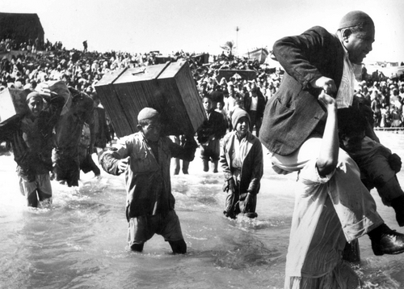
Authentic Historical Photograph: Palestinian families wading through coastal waters carrying trunks and possessions as they flee the fighting during the 1948 Nakba.
The 1948–49 war resulted in what Palestinians mourn as the Nakba ("Catastrophe"), displacing approximately 700,000 Palestinian Arabs from their ancestral homes and villages. Flight was driven by wartime terror from massacres like Deir Yassin, the collapse of local administration, and military expulsions under Plan Dalet. Refugees fled into squalid tent camps in the West Bank, Gaza, Jordan, Syria, and Lebanon. In December 1949, the UN established UNRWA to provide emergency food, medical clinics, and schooling across 59 refugee camps.
Source C: The 1949 Armistice Green Line
Archival Evidence • Expand ▼
[[SRC_MARKER:L2_Source_3]]
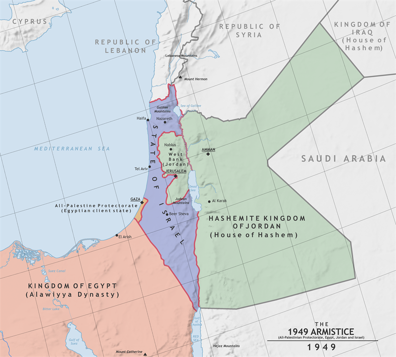
Map showing the 1949 armistice lines: Israel gained 78% of the territory, while Jordan annexed the West Bank and Egypt administered Gaza.
The 1949 Armistice Agreements fundamentally redrew the political map along the Green Line. Israel expanded its territorial control to 79% of mandatory Palestine—over 20% more than allocated by the 1947 UN Partition Plan. The proposed Palestinian Arab state was extinguished: the Kingdom of Jordan occupied and annexed the West Bank and East Jerusalem, while Egypt placed the Gaza Strip under military administration, leaving Jerusalem bitterly divided by concrete walls and barbed wire.
In December 1948, UN General Assembly Resolution 194 stated that Palestinian refugees wishing to return and live at peace should be permitted to do so, or receive financial compensation. Israel strictly rejected this "Right of Return", arguing it would destroy the Jewish demographic majority and endanger national security. Conversely, Arab host states (except Jordan) refused to grant refugees citizenship, leaving generations stranded in permanent, impoverished UNRWA camps.
In July 1950, the Israeli Knesset passed the landmark Law of Return, granting every Jewish person worldwide the automatic right to settle in Israel and receive immediate citizenship. This triggered mass immigration of over 700,000 newcomers within four years, absorbing European Holocaust survivors and Sephardic and Mizrahi Jews fleeing persecution across Arab nations. This influx doubled Israel’s population, providing vital workforce and military manpower despite severe economic rationing.
To guarantee survival along vulnerable borders, Prime Minister David Ben-Gurion unified all independent underground militias under the official Israeli Defence Forces (IDF). Enacted under the Defence Service Law of 1949, Israel instituted universal compulsory military conscription for all 18-year-old citizens (men and women), backed by regular reserve service until age 45. This forged Israel into a "nation in arms" capable of mobilising a combat-ready citizen army within 48 hours.
In its early years, Israel faced near-total economic insolvency from mass immigration and military expenditure. Survival was secured through two crucial financial lifelines. First, US President Harry S. Truman provided over $135 million in emergency loans and grants, cementing a vital diplomatic and financial partnership. Second, in September 1952, Ben-Gurion signed the West German Reparations Agreement, securing $822 million to finance modern industrial infrastructure, agricultural irrigation, and merchant shipping.
Source D: Maritime Chokepoints & The Straits of Tiran Blockade
Archival Evidence • Expand ▼
[[SRC_MARKER:L2_Source_8]]
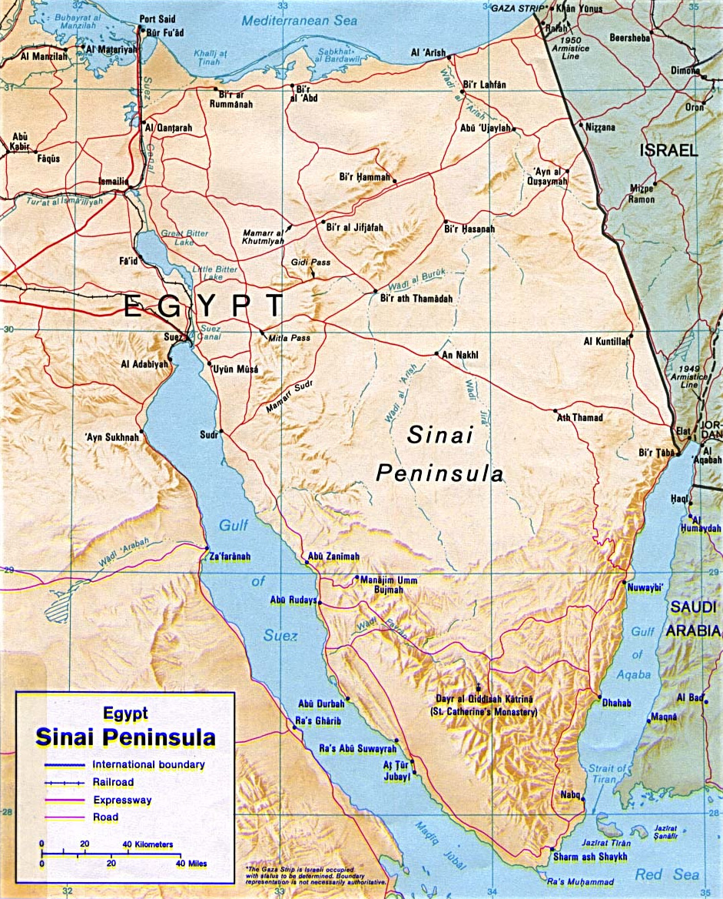
Topographical map of the Sinai Peninsula, highlighting the narrow Straits of Tiran and the entrance to the Gulf of Aqaba, which Egypt blockaded against Israeli shipping in the 1950s.
Hostile relations persisted as Arab neighbours enforced a strict diplomatic and trade boycott against Israel. Egypt banned Israeli shipping from the Suez Canal and established a military blockade at the Straits of Tiran (Sharm el-Sheikh), choking off Israeli trade from Eilat. Concurrently, displaced Palestinians launched cross-border guerrilla raids known as Fedayeen ("self-sacrificers") from Gaza and the West Bank to lay mines, ambush roads, and sabotage infrastructure.
To establish psychological deterrence along its borders, Israel adopted an aggressive reprisal policy: every cross-border raid was met with disproportionate military retaliation. In August 1953, the IDF formed Unit 101, a commando unit led by Ariel Sharon. Following a fatal civilian attack in Israel, Unit 101 raided the West Bank village of Qibya, blowing up 45 houses and killing 69 civilians. While drawing intense global condemnation, the raid solidified Israel’s uncompromising deterrence doctrine.
✍️ Consolidation & Discussion
Recall & AnalysisQ2. Why did the unresolved Palestinian refugee crisis make a lasting peace treaty impossible after 1949?
Guidance: Consider how the refugee camps in Gaza, the West Bank, Lebanon, and Syria kept the conflict alive and prevented normal diplomatic relations.
🚪 Exit Ticket: Spot the Historical Imposter
Exit Ticket · Two Truths & One Fallacy
Below are three statements regarding the 1948–49 War and the refugee crisis. Two are historically accurate facts; one is an IMPOSTER containing a classic GCSE examiner misconception.
• Statement A: The 1949 Armistice Agreements (Green Line) left Israel in control of 78% of mandatory Palestine, significantly expanding beyond the 56% proposed in the 1947 UN Partition Plan.
• Statement B: The United Nations deployed an international military peacekeeping army in May 1948 that successfully enforced the borders of an independent Palestinian Arab state in the West Bank.
• Statement C: Under the 1950 Law of Return, every Jewish person worldwide was granted the automatic right to settle in Israel and gain citizenship, doubling Israel’s population within four years.
Teacher Guidance: Task: State which statement is the imposter (A, B, or C) and write the 1-sentence historical correction explaining what actually happened.
L4: KT 1.3: Increased Tension, Nasser, and the Suez Crisis, 1955–1963[[SRC_MARKER:L3_Start]]
Learning Objectives
Understand Nasser and Egypt’s leadership of the Arab world.
Analyze the events and significance of Israeli attacks on Gaza in 1955 and Sinai in 1956.
Evaluate the events and significance of the Suez Crisis (1956), including the formation of the United Arab Republic (UAR) in 1958.
By the 1950s, the Cold War had arrived in the Middle East. Egypt's charismatic new leader, Gamal Abdel Nasser, emerged as a hero of Arab nationalism, willing to stand up to the old European empires and Israel. When he nationalised the Suez Canal, it triggered a global crisis that almost sparked World War Three.
Did you know?
- 1956: Nasser nationalised the Suez Canal, taking it back from British and French control.
- secret Sèvres agreement: A secret agreement where Israel, Britain, and France planned to invade Egypt together.
- Superpower Intervention: The US and Soviet Union forced Britain, France, and Israel to withdraw, humiliating the old empires.
Recall & Retrieval
1. Approximately how many Palestinian Arabs were displaced from their homes during the 1948–49 War?
2. What Arabic term, meaning 'The Catastrophe', is used by Palestinians to describe the 1948 displacement?
3. Which United Nations relief agency was established in December 1949 to provide emergency aid, food, and camps for Palestinian refugees?
4. What UN General Assembly Resolution, passed in December 1948, called for refugees wishing to return to their homes to be permitted to do so?
5. What armistice demarcation lines established in 1949 became known as the de facto borders of the State of Israel?
6. Which Arab country annexed the West Bank and East Jerusalem in 1950, granting citizenship to Palestinian refugees?
7. Which country controlled and militarily administered the Gaza Strip following the 1949 armistice?
8. What landmark 1950 Israeli legislation granted every Jewish person worldwide the right to settle in Israel and claim citizenship?
9. What term was given to armed Palestinian infiltrators and guerrillas who launched cross-border raids into Israel from Gaza and the West Bank?
10. On what date did David Ben-Gurion proclaim the creation of the State of Israel in Tel Aviv?
Vocabulary Check
Spot the Deliberate Error: Read the statement below. One historical fact or vocabulary concept has been deliberately falsified. Underline the error and explain the accurate historical reality below:
Pan-Arabism | Czech Arms Deal | Nationalisation | secret Sèvres agreement | UNEF | Straits of Tiran
Challenge: Write ONE statement containing a deliberate historical misconception using Pan-Arabism or Czech Arms Deal. Identify and correct the error:
Teacher Model / Historical Correction:
Source A: Political Cartoon: "The Man at the Tap" (August 1956)
Archival Evidence • Expand ▼
[[SRC_MARKER:L3_Source_2]]
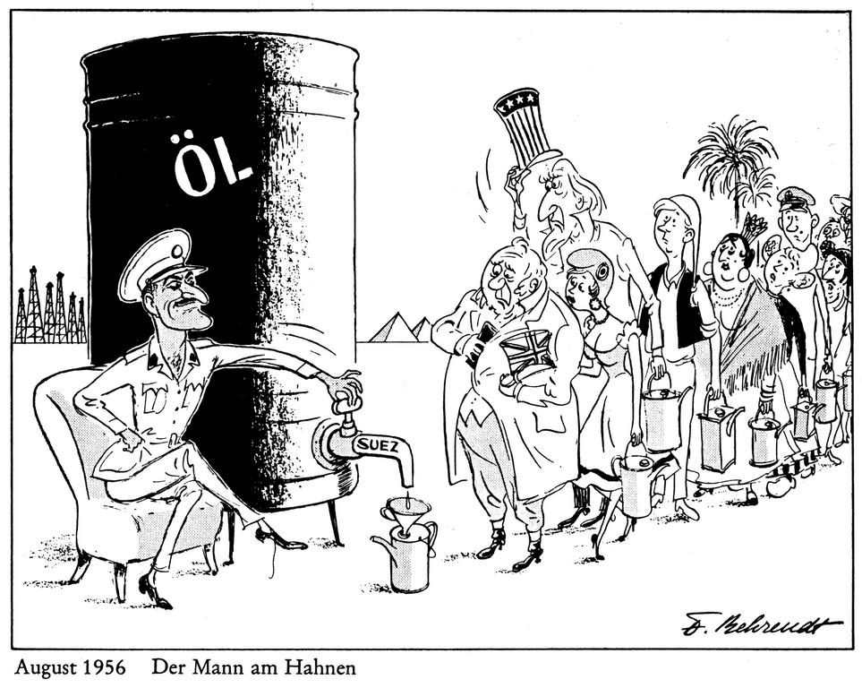
Contemporary Political Cartoon: "Der Mann am Hahnen" ("The Man at the Tap") by cartoonist Fritz Behrendt (August 1956). Egyptian President Gamal Abdel Nasser reclines with his hand on the "SUEZ" tap of a giant oil barrel, forcing Britain (John Bull), France (Marianne), and the USA (Uncle Sam) to wait in line with oil cans.
In 1954, Colonel Gamal Abdel Nasser became President of Egypt, emerging as the undisputed champion of Pan-Arabism—uniting Arab nations to end Western colonial influence and confront Israel. Nasser negotiated the withdrawal of 80,000 British troops from the Suez Canal Zone and planned the colossal Aswan High Dam on the River Nile to generate electricity, control flooding, and irrigate desert agriculture, requiring major foreign financing.
Tensions escalated on 28 February 1955 when Israeli paratroopers launched a devastating raid into the Gaza Strip, killing 37 Egyptian soldiers and exposing Egyptian military vulnerability. Humiliated, Nasser sought modern weapons. When Western powers refused sales without political conditions, Nasser signed the Czech Arms Deal in September 1955, importing 200 Soviet MiG-15 jets and 300 tanks via Czechoslovakia. This broke the Western arms monopoly and drew the Cold War into the Middle East.
Source B: Al-Ahram Front Page — Suez Canal Nationalised (July 1956)
Archival Evidence • Expand ▼
[[SRC_MARKER:L3_Source_4]]
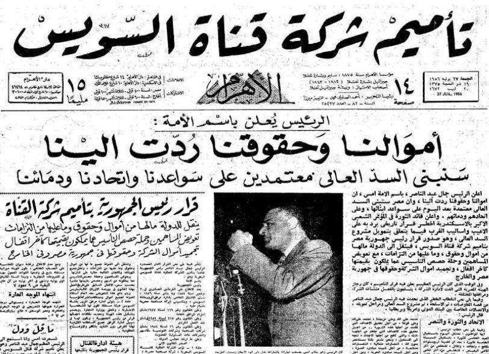
Al-Ahram banner headline declaring: "Nationalisation of the Suez Canal Company... our rights are restored."
Alarmed by Nasser’s Soviet arms deal and recognition of Communist China, the United States and Britain abruptly cancelled funding for the Aswan High Dam in July 1956. Nasser reacted defiantly. On 26 July 1956 in Alexandria, Nasser announced the nationalisation of the Suez Canal Company, declaring that Egypt would use its £35 million annual tolls to finance the dam. British Prime Minister Anthony Eden viewed Nasser’s control of imperial oil routes as an intolerable threat to Britain’s global standing.
Canal nationalisation outraged Britain and France. France sought to punish Nasser for aiding Algerian rebels, while Israel wanted to crush fedayeen bases and reopen the Straits of Tiran. In October 1956, the three nations secretly signed the tripartite agreement: Israel would launch a surprise invasion of Sinai, allowing Britain and France to issue an ultimatum demanding both sides withdraw from the canal. When Egypt refused, Anglo-French forces would invade Port Said under the guise of "peacekeepers" to seize the canal and depose Nasser.
Source C: Military Campaign Map: The 1956 Suez Crisis & Operation Kadesh
Archival Evidence • Expand ▼
[[SRC_MARKER:L3_Source_6]]
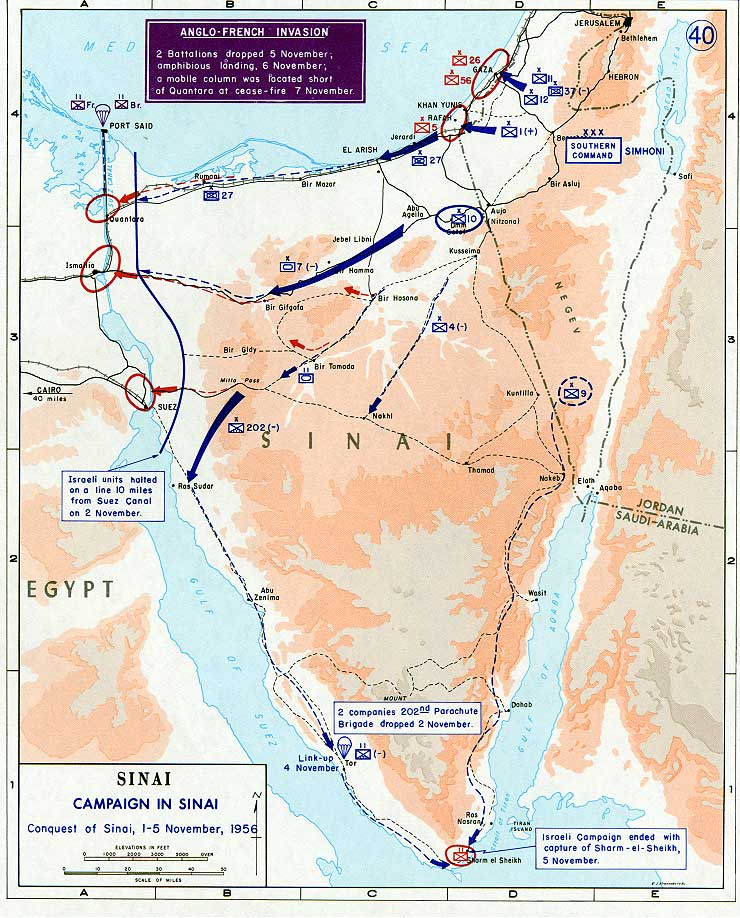
Military map illustrating the rapid Israeli armoured advance across the Sinai Peninsula, paratrooper drops at the Mitla Pass, isolation of Sharm el-Sheikh, and Anglo-French amphibious landings at Port Said.
On 29 October 1956, Israel launched the Sinai campaign, advancing across the desert to Sharm el-Sheikh and lifting the blockade of the Straits of Tiran. Britain and France issued their pre-planned ultimatum. When Egypt refused to withdraw from its sovereign territory, Anglo-French forces bombed airfields and landed troops at Port Said on 5 November. Nasser responded by scuttling over 40 ships, completely blocking the Suez Canal to international shipping.
Source D: British Forces Landing at Port Said (Operation Musketeer, Nov 1956)
Archival Evidence • Expand ▼
[[SRC_MARKER:L3_Source_7]]
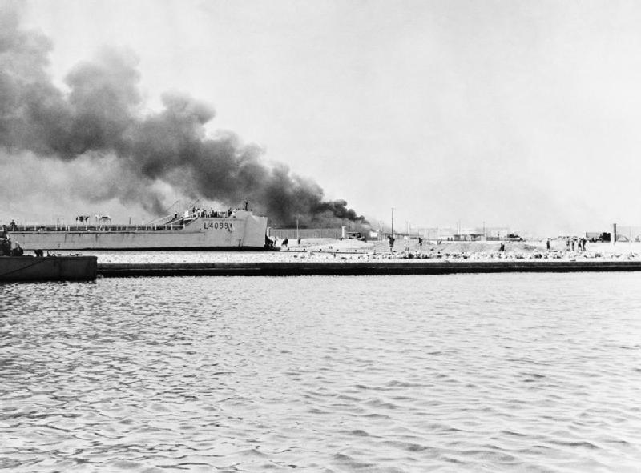
Imperial War Museum Photograph MH23500: Royal Navy landing craft landing British commandos at Port Said as oil storage tanks burn.
The invasion collapsed under decisive superpower pressure. Furious at being deceived, US President Dwight D. Eisenhower refused emergency IMF loans and threatened to collapse the British pound sterling by dumping US holdings of British currency, while the Soviet Union threatened rocket attacks on London and Paris. Facing imminent financial bankruptcy, British Prime Minister Anthony Eden was forced to order a ceasefire on 6 November 1956, compelling an ignominious military retreat.
The Suez Crisis permanently transformed Middle Eastern and global geopolitics:
• End of European Imperial Power: Britain and France were exposed as second-tier powers unable to act without US consent; Prime Minister Anthony Eden resigned in disgrace.
• Nasser’s Political Triumph: Despite battlefield defeat, Nasser emerged as an undisputed Pan-Arab folk hero for defying European empires and retaining control of the canal.
• Israeli Strategic Gains: The IDF demonstrated decisive military superiority, opening the Gulf of Aqaba to Israeli commerce and establishing effective border deterrence.
• Cold War Realignment: The Middle East became a direct Cold War arena, with expanding US support for Israel and Soviet patronage for Egypt and Syria.
In 1957, the United Nations deployed the United Nations Emergency Force (UNEF) along the Gaza-Sinai frontier and Sharm el-Sheikh to deter fedayeen attacks and guarantee passage through the Straits of Tiran. Capitalising on his anti-imperialist prestige, Nasser formed the United Arab Republic (UAR) in February 1958, a political union between Egypt and Syria that cemented Egypt’s leadership of the Arab world.
✍️ Consolidation & Discussion
Recall & AnalysisQ1. Did the Suez Crisis represent a catastrophic defeat for Western imperialism, or a dangerous escalation of Cold War rivalry?
Guidance: Weigh how the crisis ended British and French dominance in the region against how it opened the door for Soviet and American proxy competition.
🚪 Exit Ticket: The Causal Balance Scale
Exit Ticket · The Causal Balance Scale
Weigh the historical outcome of the 1956 Suez Crisis on a scale of 0 to 10 for Egypt and Gamal Abdel Nasser:
• [0] A Catastrophic Military Defeat: Israel crushed the Egyptian army in Sinai; Britain and France occupied Port Said.
• [5] A Stalemate: Egypt lost military assets, but forced an imperial withdrawal.
• [10] An Historic Political Triumph: Nasser humiliated Britain and France, kept the canal, and became the undisputed leader of the Arab world.
Teacher Guidance: Task: Where on the scale (0 to 10) do you place the outcome for Nasser, and what is your SINGLE decisive piece of historical evidence from today’s lesson justifying your score?
Generated: 2026-10-19 15:36:42 UTC | Unit: cme_new